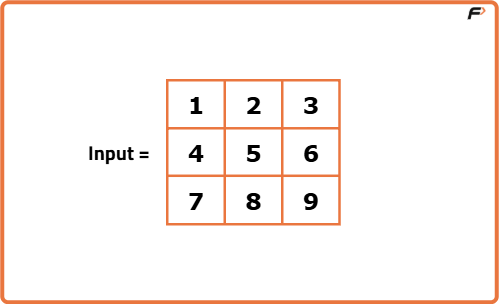
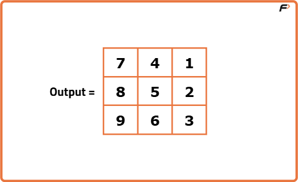
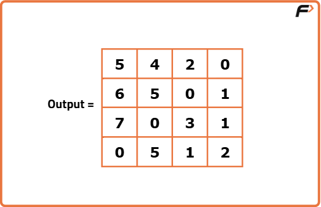
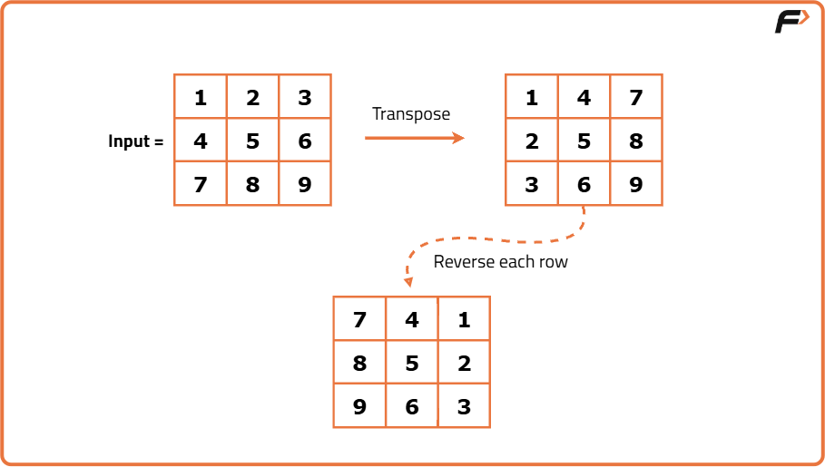

Rotate Image by 90 degree
Problem Statement: Given an N * N 2D integer matrix, rotate the matrix by 90 degrees clockwise. The rotation must be done in place, meaning the input 2D matrix must be modified directly..
Examples
Input :matrix = [[1, 2, 3], [4, 5, 6], [7, 8, 9]]

Output :matrix = [[7, 4, 1], [8, 5, 2], [9, 6, 3]]
Explanation :First, we transpose the matrix: rows become columns. Then, we reverse each row to simulate 90° clockwise rotation. So element at (0,0) goes to (0,2), (0,1) goes to (1,2), and so on, achieving the rotated layout.
Input :matrix = [[0, 1, 1, 2], [2, 0, 3, 1], [4, 5, 0, 5], [5, 6, 7, 0]] Output :matrix = [[5, 4, 2, 0], [6, 5, 0, 1], [7, 0, 3, 1], [0, 5, 1, 2]]
Explanation :First, the matrix is transposed: rows become columns. Then, each row is reversed. This moves the last column to the first row, the second last column to the second row, and so on. The original position of each element is rotated 90° clockwise into its new location.
Disclaimer: Here is the practice link to help you assess your knowledge better. It's highly recommend trying to solve it before looking at the solution.
Brute Force Approach
Algorithm
We can simulate this movement by using a new matrix. For each element at position (i, j) in the original matrix, we calculate its new position in the rotated matrix as (j, n - i - 1) where n is the size of the matrix.
- Initialize an empty matrix of the same size (n x n).
- Loop through every element of the original matrix using two nested loops.
- For each element at position (i, j), place it in the new matrix at position (j, n - i - 1).
- After completing the placement for all elements, return or copy the new matrix.
Code
#include <bits/stdc++.h>
using namespace std;
class Solution {
public:
// Function to rotate the matrix 90 degrees clockwise using extra space
vector<vector<int>> rotateClockwise(vector<vector<int>>& matrix) {
// Get the size of the square matrix
int n = matrix.size();
// Create a new matrix of same size to store rotated result
vector<vector<int>> rotated(n, vector<int>(n));
// Traverse each element of original matrix
for (int i = 0; i < n; i++) {
for (int j = 0; j < n; j++) {
// Place the element at its new rotated position
rotated[j][n - i - 1] = matrix[i][j];
}
}
// Return the rotated matrix
return rotated;
}
};
// Driver code
int main() {
vector<vector<int>> mat = {
{1, 2, 3},
{4, 5, 6},
{7, 8, 9}
};
Solution obj;
vector<vector<int>> rotated = obj.rotateClockwise(mat);
// Print the rotated matrix
for (auto row : rotated) {
for (int val : row) cout << val << " ";
cout << endl;
}
return 0;
}
Complexity Analysis
Time Complexity: O(N²),Each element of the matrix is visited exactly once and placed into a new matrix, so the time taken is proportional to the total number of elements.
Space Complexity: O(N²),We use an additional matrix of the same size to store the rotated result, leading to O(N²) extra space.
Optimal Approach
Algorithm
- Step 1: Transpose the matrix: swap elements across the diagonal. This converts rows into columns.
- Step 2: Reverse each row: this turns the new columns into the final rotated rows.
This works because:
- Transposing moves elements from (i, j) to (j, i), effectively rotating across the diagonal.
- Reversing the rows repositions the elements in each row, finalizing the clockwise rotation.
- Get the size of the square matrix (number of rows or columns).
- Start the first phase: Transpose the matrix
- For each row starting from the top to bottom:
- For each column starting from the diagonal element (excluding already visited elements):
- Swap the current element with the element that is diagonally opposite across the main diagonal.
- This effectively flips the matrix over its top-left to bottom-right diagonal, converting rows into columns.
- Move to the second phase: Reverse each row
- For every row in the matrix:
- Reverse the order of the elements in that row (first element becomes last, second becomes second last, and so on).
- This realigns the columns to their correct position for the clockwise rotation.
- Once both phases are done, the matrix will have been rotated 90 degrees clockwise in-place.

Code
#include <bits/stdc++.h>
using namespace std;
class Solution {
public:
// Function to rotate matrix 90 degrees clockwise in-place
void rotateClockwise(vector<vector<int>>& matrix) {
int n = matrix.size();
// Step 1: Transpose the matrix
for (int i = 0; i < n; ++i) {
for (int j = i + 1; j < n; ++j) {
// Swap element at (i, j) with (j, i) to transpose
swap(matrix[i][j], matrix[j][i]);
}
}
// Step 2: Reverse each row
for (int i = 0; i < n; ++i) {
// Reverse the current row to complete clockwise rotation
reverse(matrix[i].begin(), matrix[i].end());
}
}
};
// Driver code
int main() {
vector<vector<int>> matrix = {
{1, 2, 3},
{4, 5, 6},
{7, 8, 9}
};
Solution obj;
obj.rotateClockwise(matrix);
// Print rotated matrix
for (auto row : matrix) {
for (int val : row) {
cout << val << " ";
}
cout << endl;
}
return 0;
}
Complexity Analysis
Time Complexity: O(N²),We traverse every element once during transposition and again during reversal of each row, resulting in a total of O(N²) time.
Space Complexity: O(1),All operations are done in-place using only temporary variables. No extra matrix is used.